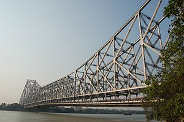

Howrah Bridge is a bridge with a suspended span over the Hooghly River in West Bengal, India. Commissioned in 1943, the bridge was originally named the New Howrah Bridge, because it replaced a pontoon bridge at the same location linking the two cities of Howrah and Kolkata (Calcutta). On 14 June 1965 it was renamed Rabindra Setu after the great Bengali poet Rabindranath Tagore, who was the first Indian and Asian Nobel laureate. It is still popularly known as the Howrah Bridge.
The bridge is one of four on the Hooghly River and is a famous symbol of Kolkata and West Bengal. The other bridges are the Vidyasagar Setu (popularly called the Second Hooghly Bridge), the Vivekananda Setu, and the newly built Nivedita Setu. It weathers the storms of the Bay of Bengal region, carrying a daily traffic of approximately 100,000 vehicles and possibly more than 150,000 pedestrians,easily making it the busiest cantilever bridge in the world. The third-longest cantilever bridge at the time of its construction, the Howrah Bridge is currently the sixth-longest bridge of its type in the world.